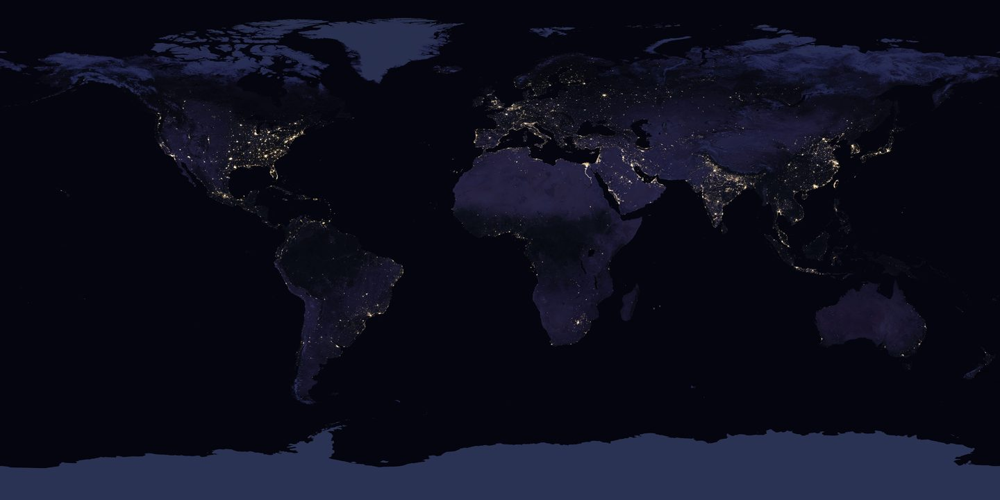
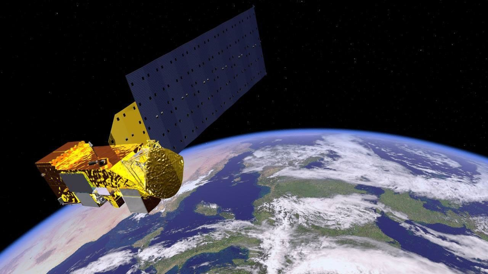

A personal perspective.
Saved areas, clear evidence digests and local forecasts with visible dates. Planned controls for accessibility, freshness and notification choices.
Proposed · not yet availableIndependent geospatial perspective
Explore natural events and local forecasts through official records, clear dates and the context behind each source.
Research preview · captured official records · independent of the providers

Published evidence snapshot · automatic source updates are not enabled on this website.
About this preview
Understand what you can explore, how to read the evidence and what comes next.
USGS
A record you can follow
Every item keeps its official source and timestamps. Event records and model forecasts carry different meanings.
Location overview. Points are source locations, not impact boundaries. Select a record below to inspect its evidence.
Source titles retain their original wording. These counts are source records and may include reports of the same event.
Read the interpretation limitsOfficial records, clear attribution
Independent information from four public providers. Their names identify the data source; they do not imply a partnership or endorsement.
Provider names are shown as text. Official insignia and logos remain subject to their owners’ permissions.
The wider perspective
Satellite missions help us study a changing planet. This gallery gives historical context to Earth observation; it does not show a live satellite connection.
Explore NASA Earth Science
Find the official route
Search international agencies, public information and official support channels. For immediate danger, contact the local emergency authority in your location.
A curated resource directory, verified 20 October 2026. This page does not contact, dispatch or represent any listed agency.
An experience you control
Enable a gentle sound when refreshed evidence contains new records. Test tones are clearly labelled and never represent an official warning.
Audio starts only after your action. No emergency signal is being monitored.
These counters update in your browser and reset when the page reloads. No analytics, session recordings or precise location are sent to external services.
A considered direction
A product roadmap grounded in what this preview demonstrates. These are proposed capabilities, not available memberships or launch commitments.
Saved areas, clear evidence digests and local forecasts with visible dates. Planned controls for accessibility, freshness and notification choices.
Proposed · not yet availableMultiple areas, team review and source change summaries. Proposed evidence exports and reviewed connections between related reports.
Proposed · not yet availableClarity before access
The notices below distinguish original BASTION-KERN material from official data and third-party rights. The English legal text is the reference version; translated summaries are for convenience.
Evaluation terms, version 21 October 2026. Jurisdiction-specific review is required before a public or commercial launch.